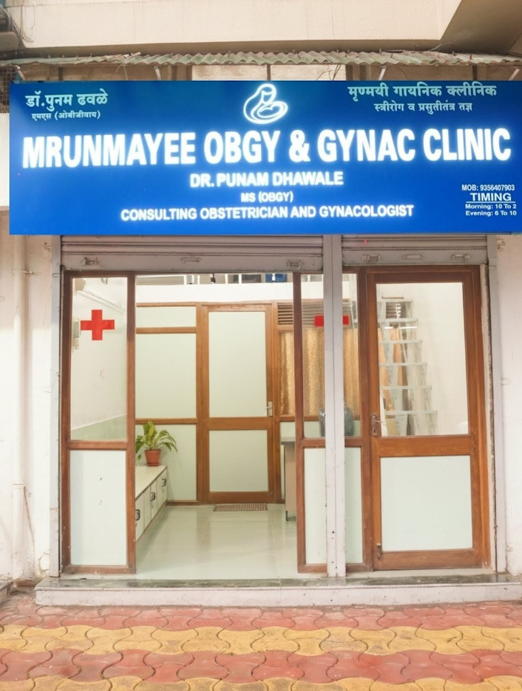

Personalized Care
Every treatment plan is shaped around your history, your concerns and your comfort — never a one-size-fits-all script.
Women's Health · Yerawada, Pune
Dr. Punam Dhawale, MS (OBGY), and the team at Mrunmayee Clinic bring 7+ years of experience to every consultation — from routine check-ups to high-risk pregnancy care — for women across Yerawada, Vishrantwadi, Viman Nagar and Lohegaon. As a trusted gynecologist for thousands of families, every visit is unhurried, private and led by you.


About Your Doctor
Dr. Punam Dhawale is a gynecologist and obstetrician holding an MS in Obstetrics & Gynecology, with over 7 years spent caring for women across every stage of life — from the first period to pregnancy, and through menopause. Patients across Yerawada, Vishrantwadi and Airport Road describe her consultations as calm, thorough and refreshingly free of medical jargon.
Her approach rests on three simple ideas: every patient deserves time, every treatment should be backed by evidence, and every conversation should feel safe. As a female gynecologist in Pune, she pays close attention to comfort and privacy, especially for young patients visiting a gynecologist for the first time.
Why Families Choose Us
Every treatment plan is shaped around your history, your concerns and your comfort — never a one-size-fits-all script.
From the first scan to delivery day, you're guided with warmth, patience and clear explanations at every step.
A calm, private and hygienic space in Yerawada designed to put anxious first-time visitors at ease.
Diagnosis and treatment protocols that reflect current medical guidelines, not outdated assumptions.
Flexible listening, plain-language explanations and zero judgement, whatever brings you in.
Recommendations are grounded in clinical evidence, explained clearly so you can make informed choices.
A woman doctor who understands, first-hand, why comfort and privacy matter in every consultation.
How We Can Help
Complete pregnancy care from the first trimester onward, with regular monitoring and honest guidance.
Supported, closely monitored normal delivery, encouraged wherever it's the safest path for mother and baby.
Specialised monitoring and management for high-risk pregnancies, with a clear plan at every stage.
Safe, well-planned cesarean delivery when it's the right choice, with a clear recovery plan after.
Diagnosis and long-term management of PCOS/PCOD, addressing periods, weight and fertility together.
A calm, judgement-free space to understand fertility concerns and plan the right next steps, as a trusted gynaecologist in Pune for infertility.
Treatment for irregular, heavy or painful periods, as a dedicated period specialist doctor near me.
Confidential, medically supervised care and counselling, provided with dignity and privacy.
Patient Stories
"I visited Mrunmayee Clinic for consultation and was very satisfied with the experience. The doctor is very professional and takes time to understand the patient's problem before suggesting treatment. The clinic is clean and organized, and the staff is cooperative. I would definitely recommend this clinic."
"One of the best doctors I've ever met. She attentively listens to the patients and she's supportive, just like a family member. She gives advice to cure the problems from the root cause. Highly recommend Dr. Punam."
"I had a fantastic experience at Mrunmayee Gynac Clinic. Dr. Punam Dhawale is very kind, patient, and thorough in her approach. She took the time to explain every possible reason and outcome clearly, which really helped me feel comfortable and confident throughout the process. Highly recommend her to anyone looking for the best gynaecologist in Vishrantwadi."
Common Questions
Can't find your answer here? Call or WhatsApp us and we'll help directly.
Dr. Punam Dhawale (MS OBGY) is a trusted choice for gynecology and pregnancy care in Pune, with 7+ years of experience and a 4.9★ Google rating across 136+ reviews at Mrunmayee Clinic, Yerawada.
Dr. Punam Dhawale at Mrunmayee Clinic serves patients from Vishrantwadi, Yerawada and surrounding areas, offering personalised gynecology and obstetric care close to home.
It's advisable to see a gynecologist for annual wellness checks, irregular or painful periods, planning a pregnancy, during pregnancy, or if you notice any unusual symptoms. Adolescents can also benefit from an early first visit.
PCOS (Polycystic Ovary Syndrome) is a hormonal condition that can cause irregular periods, acne and weight changes. Treatment usually combines lifestyle guidance with medication tailored to your symptoms and fertility goals.
Irregular periods can stem from hormonal imbalance, PCOS, stress, thyroid issues or lifestyle factors. A proper evaluation helps identify the underlying cause and the right treatment.
Yes, Mrunmayee Clinic offers infertility consultations, including initial evaluation, cycle tracking and guidance on next steps for couples trying to conceive.
Yes, Dr. Punam Dhawale supports and encourages normal delivery wherever safely possible, with continuous monitoring throughout labour.
Yes, the clinic provides complete antenatal, delivery and postnatal care, along with close monitoring and management of high-risk pregnancies.
Normal delivery is a vaginal birth that typically allows faster recovery, while a cesarean (C-section) is a surgical delivery recommended when it is safer for mother or baby. Dr. Punam discusses the best option based on your individual case.
Adolescent girls can benefit from a first gynecology visit around the time periods begin, or earlier if there are concerns, in a comfortable and judgement-free setting.
Yes, ovarian cysts and fibroids are diagnosed through examination and ultrasound, with treatment ranging from monitoring to medication or minor procedures depending on severity.
Antenatal care includes regular check-ups, growth and wellbeing monitoring, required vaccinations, nutrition guidance and preparation for a safe delivery.
Yes, the clinic offers guidance and treatment for menopause-related symptoms such as hot flashes, mood changes and bone health concerns.
You can book an appointment by calling or messaging on WhatsApp at +91 93564 07903, or by visiting Mrunmayee Clinic directly during clinic hours, 11:00 AM to 10:00 PM.
Yes, family planning consultations covering contraception options and preconception guidance are available at the clinic.
Mrunmayee Clinic is easily accessible for patients from Yerawada, Vishrantwadi, Viman Nagar, Lohegaon, Tingre Nagar, Dhanori and Airport Road.
Visit or Reach Us
Shop 06, Surya Terrace, Blue Haven Society, Pratik Nagar, Mohanwadi, Yerawada, Pune, Maharashtra – 411006
Open daily, 11:00 AM – 10:00 PM